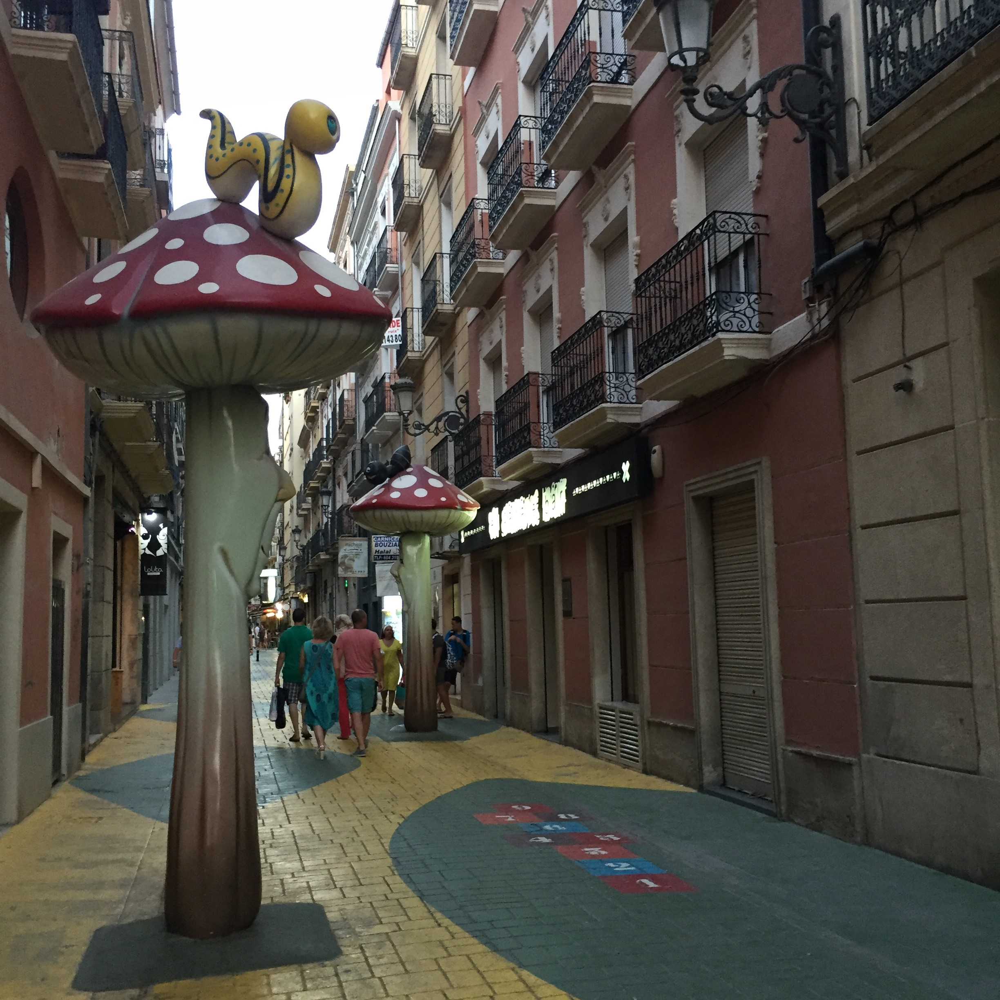
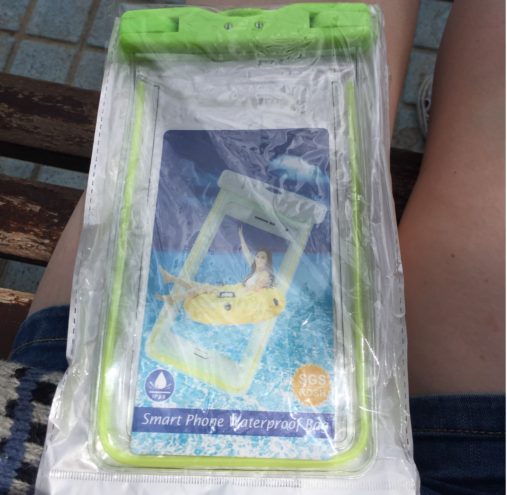

I liked that in Alicante even trash cans are beautiful. Look how cute is this yellow monster! I think he eats plastic bottles and helps to recycle.
Or this lady with a butterfly.
Or this, I do not know who is it, looks like some crazy professor or pilot or so.
When I saw this street, I thought that I am walking with Alice in the Wonderland. It was so unusuall to see this huge mushrooms all over. It felt very magical to walk there. Also the street is full of small design shops, bars and restaurants. So I even stayed longer in there, enjoying the feeling and view. I think I went there few more times during my stay in Alicante. Took many pictures with each of those mushrooms.Liked it very much.
Food in Alicante is my favorite part. It is very cheap and fresh. Vegetables and fruits are very delicious. Also sea food is very good and it is worth it to taste it in some restaurant. But I also enjoyed simple street food. Like on this picture just a salad and a sandwich. Beer and coffe was as well included in this meal and all together cost just about 6 euro. The only question was; should I have a coffee before the beer or after? Have never tried before this combination. It also worth to say that beer and wine are very good quality in Spain and prices for them starts just from 40 cents per can. Very big difference compared to Finland. So it is was very nice to have a cold beer sometime with a dinner just for a few cents.
In Alicante is few kilometers long sandy beach which called Postiguet beach (Playa del Postiguet)It is located in the city centre just next to Santa Barbara Castle. A lot of people are going there for swim every good sunny day. But I could find a place for me without any problem. Sun beds and umbrellas are pretty expencive to rent, so few times I just stayed under the palm tree.
I was alone and I can not leave my keys, phone and money under the palm tree when I was swimming. So I bought waterproof case for my phone. It was some cheap transparent plastic, but it actually worked, so I even could take a few pictures and videos from the water, and it was awesome.
And here is the picture of waterproof case for the phone
